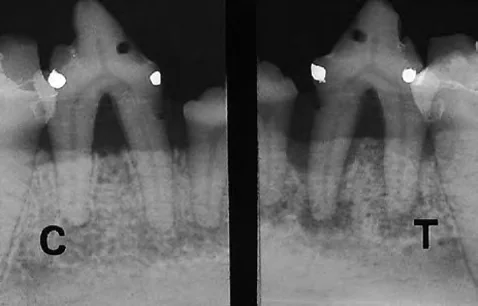

نسخه استخراجشده؛ ترجمه یا تأیید علمی انجام نشده است. وضعیت: captured
پیش از شناختن بیماری، باید بدانی «طبیعی» چه شکلی است:
ستیغ استخوان بیندندانی در فاصله ۱ تا ۲ میلیمتری آپیکالتر از CEJ قرار دارد.
ستیغ استخوان موازی با خط فرضی متصلکننده CEJ دو دندان مجاور است.
لامینا دورا بهصورت خط سفید پیوسته و واضح دیده میشود و ستیغ را میپوشاند.
فضای لیگامان پریودنتال یک نوار تیره باریک و یکنواخت در تمام طول ریشه است.
⚠️ نکته: فاصله ۱ تا ۲ میلیمتری یک عدد ثابت نیست بلکه محدودهای طبیعی است؛ آنچه بیشتر اهمیت دارد، موازی بودن ستیغ با خط CEJهاست.
خط سفید واضح ستیغ مبهم، ناپیوسته یا محو میشود. این پیش از هر تغییر در ارتفاع استخوان رخ میدهد.

ستیغ تیز و مثلثی به شکل کندشده یا نامنظم در میآید.
فضای PDL در نزدیکی ستیغ به شکل قیفی یا مثلثی پهن میشود — به آن «تریانگولاسیون» میگویند.
دیرترین نشانه؛ زمانی دیده میشود که فاصله ستیغ تا CEJ از ۲ میلیمتر بیشتر شود.
📌 ترتیب زمانی را به خاطر بسپار: ابتدا لامینا دورا، سپس شکل ستیغ، سپس فضای PDL، و در آخر ارتفاع استخوان.
| یافته | در رادیوگرافی؟ |
|---|---|
| عمق پاکت | ❌ هرگز — پاکت بافت نرم است |
| فعال یا غیرفعال بودن بیماری | ❌ رادیوگرافی گذشته را نشان میدهد نه اکنون |
| وضعیت بافت نرم و التهاب | ❌ |
| استخوان باکالی و لینگوالی | ❌ بهدلیل همپوشانی با ریشه |
| سطح چسبندگی (CAL) | ❌ |
| استخوان بیندندانی | ✅ بهترین کاربرد رادیوگرافی |
| جرم زیرلثهای بزرگ، لبه اضافی ترمیم | ✅ اگر به اندازه کافی معدنی باشد |
پیش از آنکه تحلیل استخوان در تصویر دیده شود، باید حدود ۳۰ تا ۵۰ درصد محتوای معدنی از دست برود. به همین دلیل:
🔑 تحلیل واقعی استخوان همیشه بیشتر از آن است که در رادیوگرافی دیده میشود.
⚠️ اشتباه رایج ۱: نخستین نشانه رادیوگرافیک، تغییر لامینا دورای ستیغ است نه کاهش ارتفاع استخوان.
⚠️ اشتباه رایج ۲: رادیوگرافی طبیعی، بیماری فعال را رد نمیکند.
⚠️ اشتباه رایج ۳: رادیوگرافی مکمل معاینه بالینی است، نه جایگزین آن.